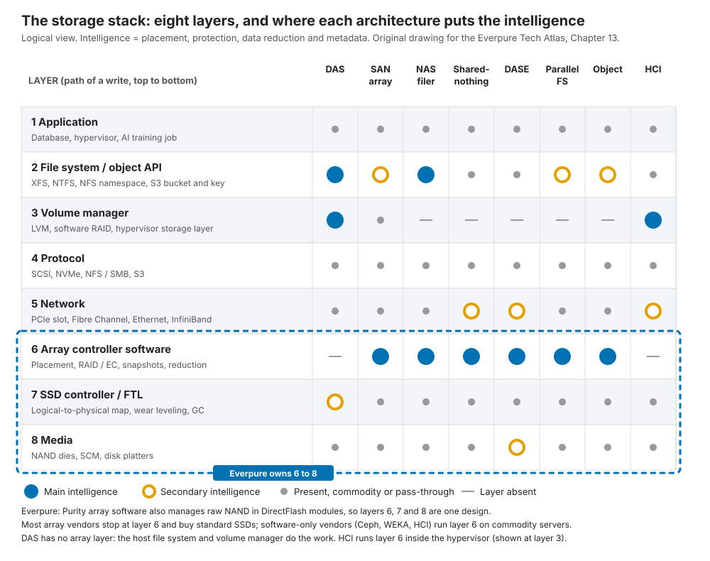
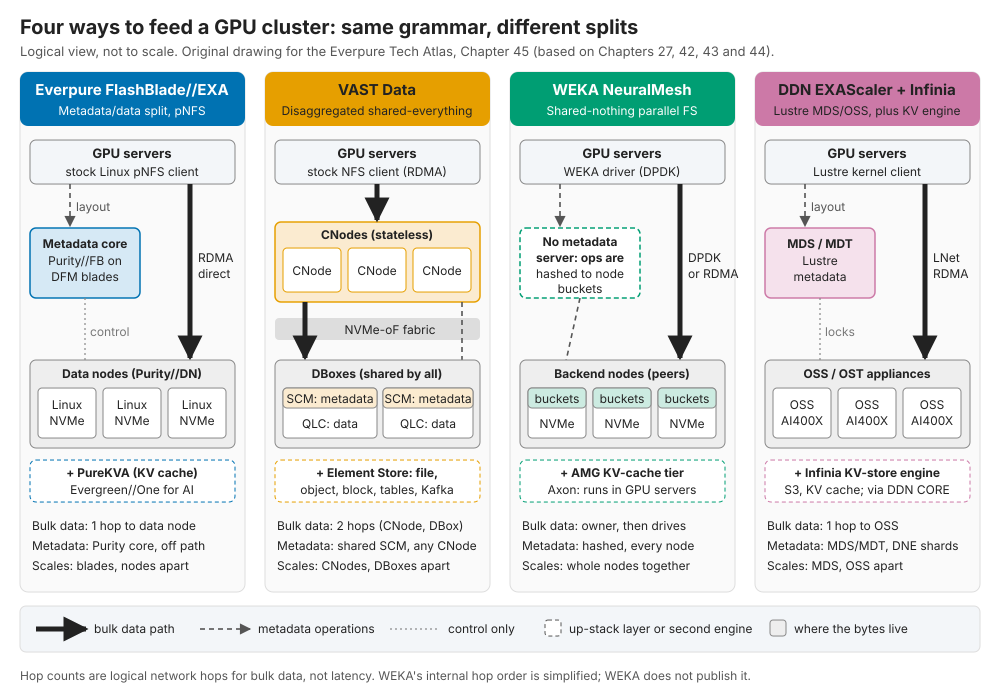

0.2. The one-page map¶
Depth: L1 · Reading time: ~9 min · Last verified: 2026-11-01 Prerequisites: 0.1 How to use this atlas. Nothing else; every section below links to the chapter that explains it.
TL;DR¶
- The domain is a stack: media, devices, protocols, architectures and data services, stressed by AI workloads and shaped by NVIDIA, hyperscalers and NAND makers.
- Everpure (NYSE: P, formerly PSTG)1 plays unusually low and unusually wide. It owns flash management (DirectFlash), the OS (Purity), two array families and a subscription model (Evergreen) across them.
- Its distinctive asset is media economics. One flash translation layer over raw-NAND modules yields bigger modules than standard SSDs, a design Everpure licenses to hyperscalers.
- Its AI position rests on one benchmark lead, with thin references and no completed EXA certification. FlashBlade//EXA led MLPerf Storage v3.0, a round VAST, WEKA, DDN, Dell, IBM and NetApp skipped.
- The money is still mostly arrays, wrapped in fast-growing subscriptions: US$2.13B of subscription ARR against FY27 revenue guidance of US$5.03–5.07B2.
Why this matters for Everpure strategy¶
Every deal, partnership or product bet lands on one layer of the map and touches others. A data-intelligence acquisition sits above the array but depends on what the array knows. An NVIDIA reference design sits beside it and decides the shortlist. A NAND price spike sits below it and moves gross margin within a quarter. The ten diagrams below show where Everpure sits, each linked to its evidence.
Core concepts¶
The whole domain on one page¶
mindmap
root((Storage and AI storage))
Media
NAND SLC to QLC
HDD and HAMR
HBM DRAM CXL
Devices
SSD controller and FTL
DirectFlash Module
EDSFF form factors
Protocols
Block NVMe-oF
File NFS and pNFS
Object S3
RDMA and GPUDirect
Architectures
Dual controller
Shared nothing
Disaggregated DASE
Parallel file systems
Data services
Reduction and protection
Control planes
Consumption models
AI workloads
Training and checkpoints
Inference KV cache
RAG and agents
Ecosystem
NVIDIA
Hyperscalers and neoclouds
NAND makers
Competition
Incumbents
VAST WEKA DDN
Hyperscaler build
Everpure
Purity and DirectFlash
FlashArray and FlashBlade
Evergreen and Fusion
Hyperscaler licensingFigure 0.2.1 — Nine branches cover the domain; Everpure has a product or a dependency on every one of them, which is what makes its strategy a portfolio question.
Parts 1–3 explain the first five branches, Part 5 AI workloads, Parts 4 and 6 the rest; the glossary defines every leaf.
Everpure in 10 diagrams¶
1. Seventeen years, five pivots¶
timeline
title Pure Storage to Everpure
2009 : Incorporated
2012 : FlashArray GA
2015 : Evergreen upgrades begin : NYSE IPO
2017 : FlashBlade GA : FlashArray X with DirectFlash
2020 : Portworx acquired
2024 : First hyperscaler design win : CoreWeave stake
2025 : FlashBlade EXA announced and GA
2026 : Renamed Everpure : 1touch closes : Second hyperscaler winFigure 0.2.2 — Each era added a layer to the same Purity and DirectFlash core.
Pure Storage was incorporated in 20093 and shipped FlashArray in 20124. Its pivots stacked rather than replaced each other: the array; the business model (Evergreen in-place upgrades from 20155, IPO the same year6); file and object (FlashBlade, 20177); cloud-native software (Portworx, 20208); IP licensing (a hyperscaler design win, December 20249). Data intelligence (1touch, closed May 202610) arrived with the rebrand11 and a second top-five hyperscaler win12. All were small bets funded by array cash flow. See Chapter 25.
2. Where Everpure plays in the stack¶

Figure 0.2.3 — Everpure owns three adjacent layers (array software, flash management and media packaging) as one design.
Every I/O crosses eight layers, from application to NAND. Most array vendors keep their intelligence in layer 6, the array software, above SSDs that run their own firmware. Software-only vendors stop above the hardware. Purity also does the SSD controller's job, so one design spans layers 6 to 8. That integration yields density, efficiency and the hyperscaler licence; it costs R&D and the burden of qualifying every NAND generation. See Chapter 13.
3. DirectFlash versus a commodity SSD¶

Figure 0.2.4 — A commodity-SSD array pays for controllers, DRAM maps, garbage collection and spare flash per drive; DirectFlash pays once.
An SSD is a small computer hiding NAND's erase-before-write physics behind a map. An SSD-based array runs that map, garbage collection and spare capacity twice: in each drive and again in its own log. DirectFlash removes the drive-level brain, so Purity schedules every NAND die globally. The visible result is module size: 300 TB DFMs (released in 2025, per Everpure's FY26 10-K13; "now up to 300 TB" in August 2026 coverage14) against 245.76 TB for the largest standard SSD confirmed shipping15; Sandisk has announced 256 TB16. Power savings beyond that are vendor claims, best checked at system level. It is the integrated-memory-controller move, made by a fabless player buying NAND from SSD-selling IDMs. See Chapter 26.
4. Purity: one OS from protocol to NAND¶
flowchart LR
H["Hosts: block, file, S3"] --> NV["NVRAM, write acked"]
NV --> DR["Inline data reduction"]
DR --> LS["Log-structured segments"]
LS --> DF["DirectFlash global FTL"]
DF --> N["Raw NAND modules"]
KV[("Metadata key-value store")] <--> DR
KV <--> LSFigure 0.2.5 — Purity appends, never overwrites, and keeps every mapping in a metadata store; that one design choice explains snapshots, reduction and DirectFlash.
Purity behaves like a database whose rows are storage blocks. A write is acknowledged once it sits in NVRAM that survives a controller failure, then deduplicated, compressed and packed into large sequential segments with dual parity. Nothing is overwritten in place; a newer version simply wins in the metadata map. Snapshots become nearly free, and small random writes become the large sequential ones QLC tolerates. Purity//FB applies the same ideas across FlashBlade's blades. See Chapter 26.
5. The product lineage¶
flowchart LR
P["Purity plus DirectFlash"] --> FA["FlashArray, Purity FA: dual controller, block first"]
P --> FB["FlashBlade, Purity FB: scale-out file and object"]
FA --> FA1["XL and X: TLC performance"]
FA --> FA2["C and E: QLC capacity"]
FA -.-> FA3["ST: commercial SSDs"]
FB --> FB1["S: performance, QLC"]
FB --> FB2["E: capacity, QLC"]
FB --> FB3["EXA: metadata core plus third-party data nodes"]Figure 0.2.6 — FlashArray splits into TLC performance and QLC capacity tiers; FlashBlade splits by configuration, on QLC throughout; //ST and EXA are the two deliberate exceptions to "all DirectFlash".
FlashArray is scale-up, dual-controller and block-first, with file and S3 added later. FlashBlade is scale-out file and object. FlashArray forked by media: TLC for performance (//X, //XL), QLC for capacity (//C, //E). FlashBlade forked by configuration, not media: //S for performance and //E for capacity, both on QLC modules. FlashBlade//S is not shared-everything; Everpure describes Purity//FB as "partitioned-writer"17, with each blade owning part of the namespace over pooled media (Chapter 15). Two exceptions matter: FlashArray//ST uses commercial SSDs18, and FlashBlade//EXA, announced March 202519 and generally available from June 202520, adds off-the-shelf Linux/NVMe data nodes. Each trades DirectFlash purity for a market: extreme IOPS for //ST, AI-scale throughput for EXA. See Chapter 27.
6. FlashBlade//EXA against the AI-native field¶

Figure 0.2.7 — Each handles metadata differently: EXA and DDN send bulk data one hop, straight to where it lives; VAST adds a CNode hop for shared, stateless compute; WEKA has no metadata server at all.
EXA keeps metadata on a Purity//FB core of DirectFlash blades and sends bulk data straight to third-party data nodes over stock-client pNFS, so the data tier is not DirectFlash. VAST puts everything on shared media behind stateless compute; WEKA spreads metadata across every node; DDN runs Lustre with a kernel client. EXA's 877.5 GiB/s checkpoint write topped MLPerf Storage v3.021, a round VAST, WEKA and DDN skipped22, as did Dell, IBM and NetApp23. The gaps are references and badges: no public 10,000-GPU EXA site, and NVIDIA's SuperPOD certification belongs to FlashBlade//S24. For EXA, Everpure announced in March 2026 that it was extending NVIDIA-Certified Storage validation, a step toward the NCP level; no completed EXA certification was found by November 202625. See Chapter 45.
7. The platform and Evergreen¶
flowchart TB
DI["Data Intelligence and Portworx"] --> CP["Fusion policies plus Pure1 telemetry"]
CL["Everpure Cloud"] --> CP
CP --> AR["FlashArray, FlashBlade, EXA"]
AR --> OS["Purity"]
OS --> MD["DirectFlash Modules"]
EV["Evergreen subscription"] -.-> CP
EV -.-> AR
CP -.->|"telemetry triggers in-place refresh"| EVFigure 0.2.8 — One OS on every array, one control plane over every array, and a subscription that refreshes hardware in place because the telemetry says when.
Evergreen makes the platform work. Customers subscribe to an architecture; controllers and media are refreshed in place with no data migration, which works because controllers are stateless and Pure1 watches the fleet. Above the arrays, Fusion turns storage into policy- and API-driven capacity, Portworx extends it to Kubernetes, and Data Intelligence (from 1touch) reads what the data is. Everpure's bet is that switching costs move into the control plane, but adoption is early: Fusion passed 1,200 customers by Q1 FY2726, under a tenth of the installed base on the atlas's estimate (Chapter 28). See Chapter 28.
8. Revenue, ARR and the backlog¶

Figure 0.2.9 — ARR has compounded at about 21% a year since FY2023 (16% in FY26, 20% at Q2 FY27); RPO stepped up sharply in FY26 as large deals and longer Evergreen terms filled the backlog, partly at the expense of ARR growth.
Two revenue lines hide three businesses: arrays (NAND on Everpure's books), ratable Evergreen subscriptions, and hyperscale DirectFlash licences, plus some parts, where the customer buys the NAND. FY26 revenue was US$3.66B13. At Q2 FY27, subscription ARR was US$2.13B (+20%) and RPO US$4.1B (+44%)2. NAND is the margin risk: non-GAAP product gross margin was 66.2%, against 74.9% for subscriptions27, and DirectFlash's lower bill of materials cushions that squeeze rather than preventing it. FY27 growth is partly price pass-through; watch ARR and units. See Chapter 29.
9. The ecosystem¶
flowchart LR
EP(("Everpure"))
NV["NVIDIA"] ---|"certification, STX co-design"| EP
EP -->|"DirectFlash licence plus parts"| HS["Two top-five hyperscalers"]
NAND["NAND makers"] -->|"supply and qualification"| EP
NAND -.->|"sell NAND direct"| HS
AZ["Azure and AWS"] ---|"cloud services"| EP
EP -->|"equity stake, EXA supply"| NEO["Neoclouds incl. CoreWeave"]
CS["Cisco, GSIs, channel"] -->|"resell, integrate"| EPFigure 0.2.10 — Most of the ecosystem is distribution and validation; in hyperscale, the NAND makers sell around Everpure straight to its customer.
NVIDIA controls the AI shortlist; Everpure is one of twelve storage co-design partners on its BlueField-4 STX architecture, alongside VAST, WEKA, DDN, Dell and NetApp28. Microsoft co-developed an Azure-native Everpure service29. Cisco and integrators carry enterprise volume. Everpure holds a CoreWeave stake30, but VAST is that neocloud's incumbent (Chapter 35). In hyperscale, NAND makers sell flash directly to the customer, so Everpure is paid for IP, software, support and some non-NAND parts, not for NAND bits. See Chapter 29 and Chapter 34.
10. The competitive map¶
quadrantChart
title Media economics vs hardware model - atlas judgment, Nov 2026
x-axis Vertically integrated --> Hardware-agnostic software
y-axis Commodity media handling --> Differentiated media economics
quadrant-1 Software with media economics
quadrant-2 Integrated media moat
quadrant-3 Integrated, commodity media
quadrant-4 Portable software
Everpure: [0.20, 0.92]
IBM: [0.28, 0.76]
Huawei: [0.08, 0.70]
Dell: [0.38, 0.28]
NetApp: [0.46, 0.30]
HPE: [0.30, 0.38]
DDN: [0.26, 0.22]
VAST: [0.74, 0.80]
WEKA: [0.90, 0.46]
Hammerspace: [0.96, 0.10]Figure 0.2.11 — There are two routes to media economics: integrate flash management (Everpure, IBM, Huawei) or extract it in software from QLC (VAST); most vendors take neither.
Placements are the atlas's judgment, drawn from Chapters 42–47. Everpure sits furthest into the integrated-media corner; other placements are more contestable. VAST reaches similar economics from the opposite corner, in software on commodity QLC, which makes it the most direct architectural rival. Dell and NetApp compete on installed base, channel and breadth, not media. Hammerspace's namespace above all arrays would make them interchangeable: does the array stay the control point? See Chapter 49 and Chapter 54.
How Everpure approaches it vs. competitors¶
| Layer of the map | Everpure | VAST | Dell / NetApp | Hyperscalers |
|---|---|---|---|---|
| Media and devices | Own modules on raw NAND (DirectFlash) | Commodity QLC plus SCM, made cheap by wide erasure codes | Standard SSDs | Commodity drives, own designs, licensed IP |
| AI architecture | EXA: metadata core, direct data path | DASE: stateless compute, shared media | New first-generation AI systems (Lightning FS, AFX) | Home-grown file systems |
| Data services | One OS across both families | Climbing into database and AI engines | Broadest portfolios, many OSes | Rich, but only for data in their cloud |
| Business model | Evergreen subscription and IP licensing | Software licence, partner hardware | Hardware, financing, bundling | Pay per use |
Table 0.2.1 — Each competitor is strong where Everpure is thin: VAST in AI references, Dell and NetApp in breadth and channel, hyperscalers in data already in the cloud. Atlas judgment; evidence in Chapters 42–47.
Steelman the rivals: VAST's US$30B valuation31 rests on more than US$500M of committed ARR (company-stated)32 and the largest neocloud references; Dell holds about three times Everpure's external-storage share33.
History and trajectory¶
The map has redrawn itself three times in Everpure's life: flash replaced performance disk, subscriptions replaced forklift upgrades, and AI now pulls value down into fabrics and up into data services (Chapter 53). Dated signals: second-hyperscaler revenue from FY2812, the next MLPerf Storage round and who enters it, NVIDIA certification for EXA itself, and whether NAND prices let product margin recover.
Numbers that matter¶
If you only remember 10 numbers:
| Metric | Value | Context | Source / date |
|---|---|---|---|
| FY27 revenue guidance | US$5.03–5.07B (~+38%) | Initial guide US$4.3–4.4B (Feb 2026), raised in May and again in August | Everpure, 2026-08-262 |
| Subscription ARR / RPO | US$2.13B (+20%) / US$4.1B (+44%) | Q2 FY27, the recurring base and backlog | Everpure, 2026-08-262 |
| Share of external enterprise storage | 8.1%, #4 (Dell 23.8%) | 2Q26, branded arrays only | IDC via StorageReview, 2026-0933 |
| Non-GAAP gross margin, product vs subscription | 66.2% vs 74.9% | Q2 FY27, NAND squeeze on product | Investing.com, 2026-0827 |
| Largest DFM vs largest shipping SSD | 300 TB vs 245.76 TB | DFM size Everpure-stated; 256 TB SSD announced by Sandisk, shipment unconfirmed | Blocks & Files, 2026-08-1114; Micron, 2026-05-0515 |
| Hyperscale volume | >2 EB in FY26 | First customer Meta, named in the FY25 10-K; second, unnamed win Aug 2026, revenue from FY28 | Blocks & Files, 2025-12-0334; 10-K FY2535; Everpure, 2026-08-1012 |
| EXA checkpoint write, MLPerf Storage v3.0 | 877.5 GiB/s | 30 third-party data nodes; VAST, WEKA, DDN, Dell, IBM, NetApp absent | HPCwire, 2026-09-0221; StorageReview22 |
| Enterprise SSD ÷ nearline HDD, $/TB | ~18.6× | 30 TB TLC, Aug 2026; one vendor's index (VDURA), other readings up to ~23× | Hardware Busters, 2026-08-2136 |
| VAST valuation vs committed ARR | US$30B vs >US$500M | Valuation reported by CNBC; ARR company-stated | CNBC, 2026-04-2231; Futurum, 2026-0432 |
| Storage share of AI infrastructure spend | 2.4% | 1Q26; small, but it gates the GPUs | IDC, 2026-07-2137 |
Table 0.2.2 — Ten numbers that answer most first-meeting questions about growth, margin, share, technology and AI; say each with its date.
Conversation playbook¶
Three questions for a PM
- "Which of these ten diagrams will look most different in two years?" A strong answer picks one and names the driver, such as EXA references or hyperscale mix.
- "Where on the mindmap do we lose deals we should win?" Listen for a branch and a named competitor.
- "How much of FY27 growth is price and how much is units?" Listen for NAND pass-through versus capacity shipped.
Three questions for an engineer
- "What does owning layers 6 to 8 cost you each NAND generation?" Listen for qualification time and supplier count.
- "Where does EXA's direct data path hurt, compared with VAST's shared media?" A strong answer concedes something real, such as data-node maturity.
- "Which diagram in this chapter is wrong or out of date?" Take any correction back to the chapter.
Don't say this:
- "Everpure is just a flash array company." Subscriptions and IP licensing matter.
- "DirectFlash is a big SSD." It has no drive-level FTL.
- "EXA beat VAST in MLPerf." VAST did not submit to that round.
- "Hyperscalers buy Everpure arrays." They license the design and buy some parts; the NAND comes from their own suppliers.
- "EXA is NVIDIA-certified." Everpure announced an extension of validation in March 2026; the certifications on record belong to FlashBlade//S.
- "FlashBlade is shared-everything." Everpure calls it partitioned-writer; EXA is a metadata/data split, not DASE.
Going deeper (optional, L3 pointers)¶
- Each diagram's chapter link leads to its evidence; signature visuals are in Chapters 13, 26, 27, 29, 45 and 49.
- Options built on this map: Chapter 54; posters: the cheat sheets.
Key terms¶
- DirectFlash, Purity, Evergreen — see the glossary.
- Hyperscale licensing — selling the DirectFlash design to hyperscalers who buy their own NAND.
- Media economics — cost, density and power advantages that come from how flash is managed.
Sources¶
-
Nasdaq / PR Newswire, "Everpure to Change Ticker Symbol to 'P'," 2026-04-07. https://www.nasdaq.com/press-release/everpure-change-ticker-symbol-p-2026-04-07 (retrieved 2026-11-01). ↩
-
Everpure, "Everpure Announces Second Quarter Fiscal 2027 Financial Results," 2026-08-26. https://investor.everpuredata.com/news-and-events/press-releases/press-release-details/2026/Everpure-Announces-Second-Quarter-Fiscal-2027-Financial-Results/default.aspx (retrieved 2026-11-01). ↩↩↩↩
-
SEC, "Pure Storage, Inc. Form S-1," 2015-08-27. https://www.sec.gov/Archives/edgar/data/0001474432/000119312515287576/d895532ds1.htm (retrieved 2026-11-01). ↩
-
The Register, article on the FlashArray 300-series general availability (title not retrieved), 2012-05-16. https://www.theregister.com/2012/05/16/pue_storage_flash_array/ (retrieved 2026-11-01). ↩
-
Pure Storage, "Pure's Evergreen Subscription to Innovation Reaches New Milestone," 2021-07. https://www.purestorage.com/company/newsroom/press-releases/pure-evergreen-subscription-reaches-new-milestone.html (retrieved 2026-11-01); corroborated by ITWeb, 2021-07. https://www.itweb.co.za/article/pures-evergreen-subscription-to-innovation-reaches-new-milestone-delivers-over-7-000-non-disruptive-controller-upgrades-since-2015/raYAyModA85qJ38N (retrieved 2026-11-01). ↩
-
Pure Storage / Business Wire, "Pure Storage Prices Initial Public Offering," 2015-10-06. https://investor.purestorage.com/news-and-events/press-releases/press-release-details/2015/Pure-Storage-Prices-Initial-Public-Offering/default.aspx (retrieved 2026-11-01). ↩
-
GeekFluent, "Pure Storage's FlashBlade is now GA," 2017-01-25. https://geekfluent.com/2017/01/25/pure-storages-flashblade-is-now-ga/ (retrieved 2026-11-01); FlashArray//X: Pure Storage, "Pure Storage Announces First Enterprise-Class All-NVMe Flash Array, FlashArray//X," 2017-04-11. https://investor.everpuredata.com/news-and-events/press-releases/press-release-details/2017/Pure-Storage-Announces-First-Enterprise-Class-All-NVMe-Flash-Array-FlashArrayX/default.aspx (retrieved 2026-11-01). ↩
-
SEC, "Pure Storage, Inc. Form 10-K for fiscal 2021," 2021-03. https://www.sec.gov/Archives/edgar/data/1474432/000162828021005538/pstg-20210131.htm (retrieved 2026-11-01). ↩
-
SiliconANGLE, "Shares of Pure Storage jump on impressive earnings beat and strong guidance," 2024-12-03. https://siliconangle.com/2024/12/03/shares-pure-storage-jump-impressive-earnings-beat-strong-guidance/ (retrieved 2026-11-01). ↩
-
SEC, "Everpure, Inc. Form 10-Q for the quarter ended May 3, 2026," 2026-06. https://www.sec.gov/Archives/edgar/data/0001474432/000147443226000061/pstg-20260503.htm (retrieved 2026-11-01). ↩
-
World Wide Technology, "Pure Storage Rebrands To Everpure And Announces Intent To Acquire 1touch," 2026-02-23. https://www.wwt.com/news/pure-storage-rebrands-to-everpure-and-announces-intent-to-acquire-1touch (retrieved 2026-11-01). ↩
-
Everpure, "Everpure Lands New Design Win with Second Top-Five Hyperscaler," 2026-08-10. https://www.everpuredata.com/company/newsroom/press-releases/everpure-lands-new-design-win-with-second-top-five-hyperscaler.html (retrieved 2026-11-01). ↩↩↩
-
Everpure, "Form 10-K for fiscal year ended February 1, 2026," 2026-03-24. https://www.sec.gov/Archives/edgar/data/1474432/000147443226000027/pstg-20260201.htm (retrieved 2026-11-01). ↩↩
-
Blocks & Files, "Second hyperscaler plumps for Everpure's flash technology," 2026-08-11. https://www.blocksandfiles.com/flash/2026/08/11/second-hyperscaler-plumps-for-everpures-flash-technology/5285903 (retrieved 2026-11-01). ↩↩
-
Micron Technology, "Industry-Leading 245TB Micron 6600 ION Data Center SSD Now Shipping," 2026-05-05. https://investors.micron.com/news/press-release/2026/Industry-Leading-245TB-Micron-6600-ION-Data-Center-SSD-Now-Shipping/default.aspx (retrieved 2026-11-01). ↩↩
-
Blocks & Files, "Sandisk unveils 256 TB SSD for AI workloads, shipping in 2026," 2025-08-05. https://www.blocksandfiles.com/ai-ml/2025/08/05/sandisk-unveils-256-tb-ssd-for-ai-workloads-shipping-in-2026/1589534 (retrieved 2026-11-01). ↩
-
J. Emerson (Pure Storage), "The Storage Architecture Spectrum: Why 'Shared-nothing' Means Nothing," n.d. https://blog.everpuredata.com/perspectives/the-storage-architecture-spectrum-why-shared-nothing-means-nothing/ (retrieved 2026-11-01; seen via search summary, host not fetchable). ↩
-
Techzine, "Pure surprises: FlashArray gets S3 support, FlashArray//ST without DFMs," 2025-06. https://www.techzine.eu/blogs/infrastructure/132388/pure-surprises-flasharray-gets-s3-support-flasharray-st-without-dfms/ (retrieved 2026-11-01). ↩
-
SiliconANGLE, "FlashBlade//EXA: Pure Storage helps enterprises avoid starving data-hungry GPUs," 2025-03-11. https://siliconangle.com/2025/03/11/flashblade-exa-pure-storage-helps-enterprises-avoid-starving-data-hungry-gpus-accelerate-ai-workloads/ (retrieved 2026-11-01). ↩
-
TechRepublic, "Pure Storage is 'Reinventing Storage for AI'" (Accelerate 2025 keynote, FlashBlade//EXA general availability), 2025-06-19. https://www.techrepublic.com/article/news-pure-storage-event-keynote-flashblade-exa/ (retrieved via search 2026-11-01). ↩
-
HPCwire (Everpure release), "Everpure Leads MLPerf Storage Tests for Large Model Checkpointing and KV Cache," 2026-09-02. https://hpcwire.com/off-the-wire/everpure-leads-mlperf-storage-tests-for-large-model-checkpointing-and-kv-cache (retrieved 2026-11-01). ↩↩
-
StorageReview, "MLPerf Storage v3.0: 877 GiB/s checkpoints, a cloud first and a leaderboard turned over," 2026-09. https://storagereview.com/news/mlperf-storage-v3-0-877-gib-s-checkpoints-a-cloud-first-and-a-leaderboard-turned-over (retrieved 2026-11-01). ↩↩
-
Blocks & Files, "MLPerf Storage benchmark updated for modern AI," 2026-09-01. https://www.blocksandfiles.com/ai-ml/2026/09/01/mlperf-storage-benchmark-updated-for-modern-ai/5293617 (retrieved via search 2026-11-01). ↩
-
Blocks & Files, "Pure Storage's FlashBlade//S500 gains Nvidia SuperPOD certification," 2024-11-18. https://www.blocksandfiles.com/ai-ml/2024/11/18/pure-storages-flashblade/s500-gains-nvidia-superpod-certification/1598641 (retrieved 2026-11-01). ↩
-
StorageReview, "Everpure aligns FlashBlade//EXA with NVIDIA AI Factory architectures, previews Data Stream," 2026-03-16. https://www.storagereview.com/news/everpure-aligns-flashblade-exa-with-nvidia-ai-factory-architectures-previews-data-stream ; Blocks & Files, "Everpure dives deeper into AI," 2026-03-16. https://www.blocksandfiles.com/ai-ml/2026/03/16/everpure-dives-deeper-into-ai/5209351 (both retrieved 2026-11-01; search-summary only; no EXA entry seen in search extracts of NVIDIA's certified-storage list). ↩
-
Everpure, "Q1 FY27 Prepared Remarks," 2026-05-27. https://s21.q4cdn.com/687136699/files/doc_financials/2027/q1/Everpure-Q1FY27-Prepared-Remarks.pdf (retrieved 2026-11-01). ↩
-
Investing.com, "Everpure Q2 FY27 slides: 38% revenue growth, guidance raised sharply," 2026-08. https://www.investing.com/news/company-news/everpure-q2-fy27-slides-38-revenue-growth-guidance-raised-sharply-93CH-4878054 (retrieved 2026-11-01). ↩↩
-
StorageNewsletter, "Nvidia GTC 2026: Nvidia Launches BlueField-4 STX Storage Architecture With Broad Industry Adoption," 2026-03-17. https://www.storagenewsletter.com/2026/03/17/nvidia-gtc-2026-nvidia-launches-bluefield-4-stx-storage-architecture-with-broad-industry-adoption/ (retrieved 2026-11-01). ↩
-
Blocks & Files, "Pure Enterprise Data Cloud updates," 2025-09-26. https://blocksandfiles.com/2025/09/26/pure-enterprise-data-cloud-updates/ (retrieved 2026-11-01); Microsoft Learn, "Pure Storage Cloud overview," n.d. https://learn.microsoft.com/en-us/azure/partner-solutions/pure-storage/overview (retrieved 2026-11-01). ↩
-
Pure Storage, "Pure Storage Announces Strategic Investment and Technology Partnership with CoreWeave," 2024-11. https://www.purestorage.com/company/newsroom/press-releases/pure-announces-strategic-investment-and-tech-partnership-with-coreweave.html (retrieved 2026-11-01). ↩
-
CNBC, "Nvidia backs AI company Vast Data at $30 billion valuation," 2026-04-22. https://www.cnbc.com/2026/04/22/nvidia-backs-ai-company-vast-data.html (retrieved 2026-11-01). ↩↩
-
Futurum, "VAST Data Valuation Triples. Can a Unified Platform Scale AI Globally?," 2026-04. https://futurumgroup.com/insights/vast-data-valuation-triples-can-a-unified-platform-scale-ai-globally/ (retrieved 2026-11-01). ↩↩
-
StorageReview, "IDC External Storage Tracker: $10.3 Billion in Q2 2026 as Server Market Tops $166 Billion on AI Demand," 2026-09. https://www.storagereview.com/news/idc-external-storage-tracker-q2-2026-10-3-billion-as-server-market-tops-166-billion (retrieved 2026-11-01). ↩↩
-
Blocks & Files, "Pure Storage hikes full-year forecast after solid Q3," 2025-12-03. https://www.blocksandfiles.com/2025/12/03/pure-storage-hikes-full-year-forecast-after-solid-q3/1720082 (retrieved 2026-11-01). ↩
-
SEC, "Pure Storage, Inc. Form 10-K for fiscal year ended February 2, 2025," 2025-04. https://www.sec.gov/Archives/edgar/data/1474432/000162828025015044/pstg-20250202.htm (retrieved 2026-11-01; Meta named as the December 2024 design win, seen via search summary). ↩
-
Hardware Busters, "Enterprise SSD Prices Now Run 18.6x Hard Drives, and the Cheap Alternative Is Sold Out Until 2027," 2026-08-21. https://hwbusters.com/news/enterprise-ssd-prices-now-run-18-6x-hard-drives-and-the-cheap-alternative-is-sold-out-until-2027/ (retrieved 2026-11-01). ↩
-
IDC, "AI Infrastructure Spending Holds Near $90 Billion in Q1 2026 as Arm Overtakes x86 in Accelerated Servers; 2026 Forecast Raised to $497 Billion," 2026-07-21. https://www.idc.com/resource-center/blog/ai-infrastructure-spending-holds-near-90-billion-in-q1-2026-as-arm-overtakes-x86-in-accelerated-servers-2026-forecast-raised-to-497-billion/ (retrieved 2026-11-01). ↩